library(tidyverse) # Overkill, but easier than picking and choosing
library(colorspace)
library(sf)
library(patchwork)Faded colors
There are a number of reasons we might want bivariate color axes in plots. The particular use I’m looking for now is to use a faded color to indicate less certainty in a result. Other uses will be developed later or elsewhere, but should build on this fairly straightforwardly.
I’m doing this with colorspace because it’s hue-chroma-luminance approach makes it at least appear logical to shift along those dimensions. We might want hue (or luminance) to show one thing, and intensity to show another. Though we will play around with how that looks in practice. The specific use motivatiung this is to show the predicted amount of something with hue, and certainty with chroma or luminance (in particular, we have a model that makes predictions more accurately in some places than others). But there are many other potential uses.
In the HCL exploration file, I figure out HOW to generate faded colors and find some palettes that might work. Here, I’m going to sort out how to go from there to using them in plots, including creating legends.
Plot the bivariate colors
Before trying to plot with the colors, first I want to actually plot them themselves. One reason is to test how they are being created and specified, and the other is potentially to use the plot as a legend.
Why? The legend() part of ggplot may not handle the bivariate nature of the colors well, so need to basically homebrew one. This is the most flexible option- make the plot, then shrink and pretend it’s a legend. But, could also make a legend in vector form, then stack. Just not sure how well that’ll work. The shrunk plot would work better for continuous variables, the legend probably works better to use other parts of ggplot and not always have to screw around with grobs or ggarrange or patchwork or cowplot. I’ll try them all, I guess.
First, make a matrix of colors. Take the base palette, fade it and save the color values for the whole thing. The for loop is lame, should be a function, but I’m just looking right now.
baseramp <- sequential_hcl(8, 'ag_Sunset')
fadesteps <- seq(0,1, by = 0.25)
colormat <- matrix(rep(baseramp, length(fadesteps)), nrow = 5, byrow = TRUE)
for(i in 1:length(fadesteps)) {
colormat[i, ] <- lighten(colormat[i, ], amount = fadesteps[i]) %>%
desaturate(amount = fadesteps[i])
}Option 1 is to make that into a plot that we can then smash on top
# Make a tibble from the matrix to feed to ggplot
coltib <- as_tibble(colormat, rownames = 'row') %>%
pivot_longer(cols = starts_with('V'), names_to = 'column')Warning: The `x` argument of `as_tibble.matrix()` must have unique column names if
`.name_repair` is omitted as of tibble 2.0.0.
ℹ Using compatibility `.name_repair`.# coltib
ggplot(coltib, aes(y = row, x = column, fill = value)) +
geom_tile() + scale_fill_identity()
That’s upside-down with how I tend to think about it. How about flipping the construction?
fadesteps <- rev(seq(0,1, by = 0.25))
colormat <- matrix(rep(baseramp, length(fadesteps)), nrow = 5, byrow = TRUE)
for(i in 1:length(fadesteps)) {
colormat[i, ] <- lighten(colormat[i, ], amount = fadesteps[i]) %>%
desaturate(amount = fadesteps[i])
}
coltib <- as_tibble(colormat, rownames = 'row') %>%
pivot_longer(cols = starts_with('V'), names_to = 'column')
ggplot(coltib, aes(y = row, x = column, fill = value)) +
geom_tile() + scale_fill_identity()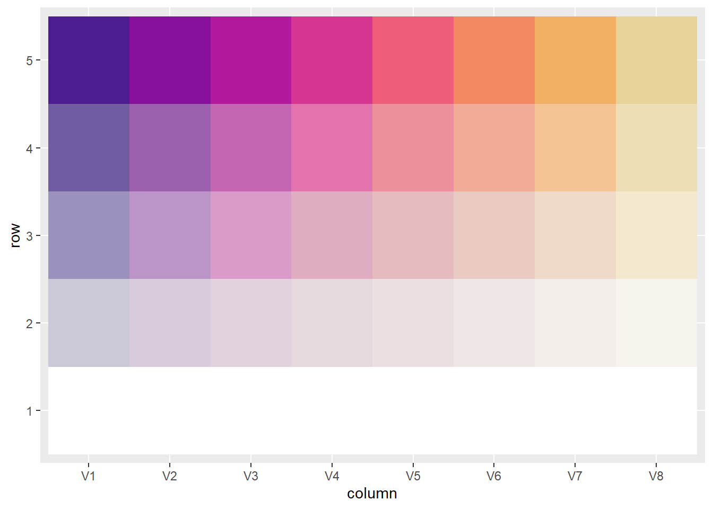
Programmatic color setting
Create a function basically following the above. But allow it to take palettes by name or raw hue values if they are obtained elsewhere (like from a manually specified hue ramp). hex color vals and pal names are both characters, but hex always starts with ‘#’, so should be able to auto-detect. It can take a number of fades, or a vector of specific fade levels, and returns the matrix of colors.
col2dmat <- function(pal, n1, n2 = 2, dropwhite = TRUE, fadevals = NULL) {
# pal can be either a palette name or a vector of hex colors (or single hex color)
# dropwhite is there to by default knock off the bottom row that's all white
# fadevals is a way to bypass the n2 and specify specific fade levels (ie if nonlinear)
if (all(str_detect(pal, '#'))) {
baseramp <- pal
} else {
baseramp <- sequential_hcl(n1, pal)
}
if (is.null(fadevals)) {
if (dropwhite) {n2 = n2+1}
fadesteps <- rev(seq(0,1, length.out = n2))
if (dropwhite) {fadesteps <- fadesteps[2:length(fadesteps)]}
}
if (!is.null(fadevals)) {
fadesteps <- sort(fadevals, decreasing = TRUE)
}
colormat <- matrix(rep(baseramp, length(fadesteps)), nrow = length(fadesteps), byrow = TRUE)
for(i in 1:length(fadesteps)) {
colormat[i, ] <- lighten(colormat[i, ], amount = fadesteps[i]) %>%
desaturate(amount = fadesteps[i])
}
return(colormat)
}Create another function that plots a matrix of colors. Typically that matrix comes out of col2dmat. Why not make one big function? because we will often want to access the color values themselves, and not always just plot them.
plot2dcols <- function(colmat) {
coltib <- as_tibble(colmat, rownames = 'row') %>%
pivot_longer(cols = starts_with('V'), names_to = 'column') %>%
mutate(row = as.numeric(row), column = as.numeric(str_remove(column, 'V')))
colplot <- ggplot(coltib, aes(y = row, x = column, fill = value)) +
geom_tile() + scale_fill_identity()
return(colplot)
}Test that works with a given number of fades
newcolors <- col2dmat('ag_Sunset', n1 = 8, n2 = 4)
plot2dcols(newcolors)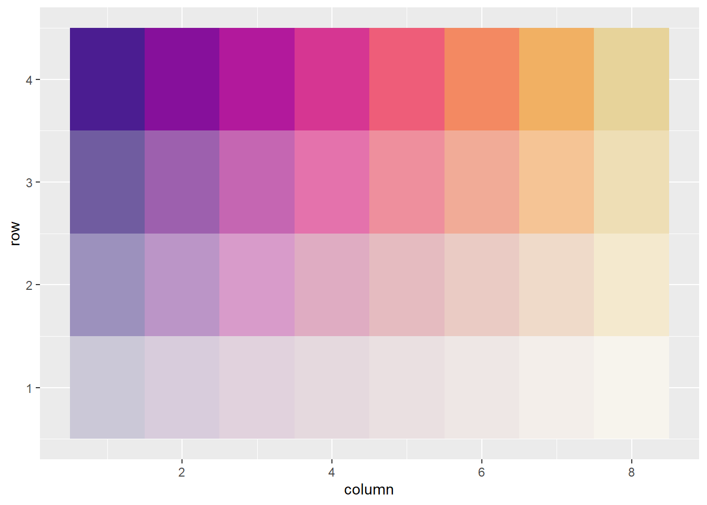
Test with set fade levels. REMEMBER FADE is FADE, not intensity. ie 0 is darkest.
newcolsuneven <- col2dmat('ag_Sunset', n1 = 8, fadevals = c(0, 0.33, 0.8))
plot2dcols(newcolsuneven)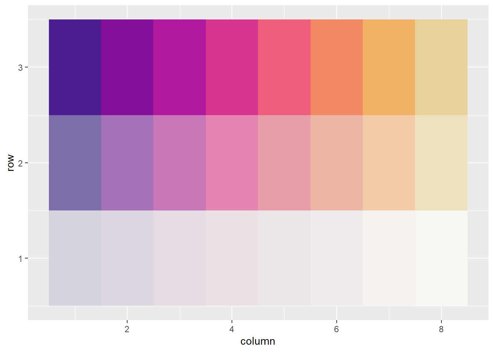
Test with non-built in palettes- ie setting hue manually. This could be particularly useful if we want quantitative hues. This tests the ability to auto-detect a vector of colors.
Use the manual-set colors from hcl exploration for testing.
hclmat <- cbind(50, max_chroma(h = seq(from = 130, to = 275, length.out = 8), l = 50, floor = TRUE),
seq(from = 130, to = 275, length.out = 8))
pg <- polarLUV(hclmat)
swatchplot(hex(pg))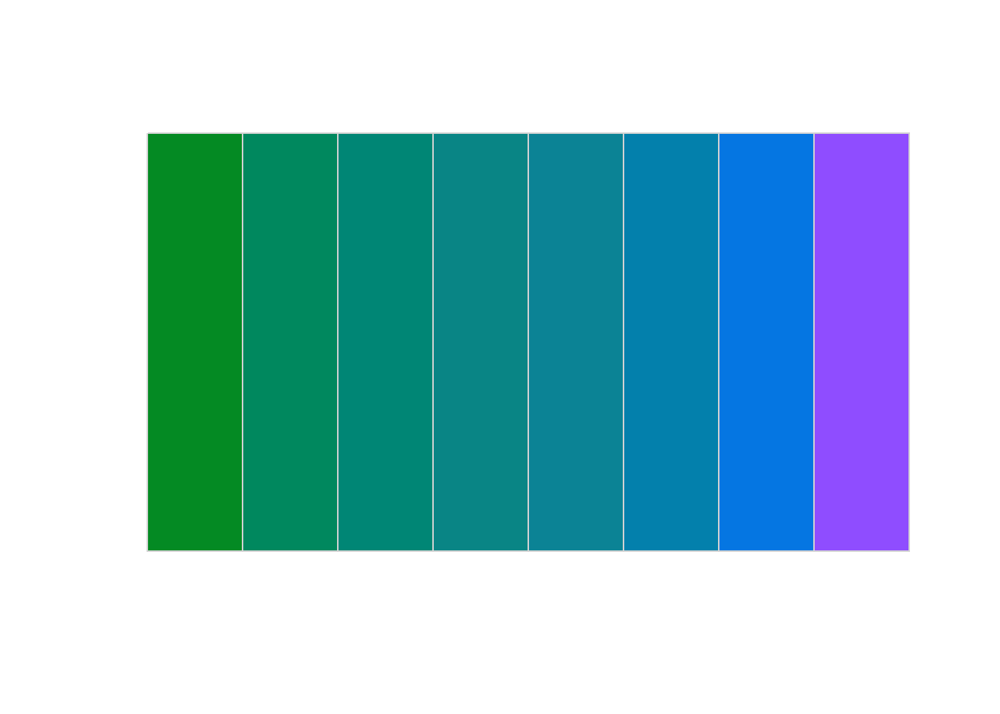
Works!
pgmat <- col2dmat(hex(pg), n2 = 4)
plot2dcols(pgmat)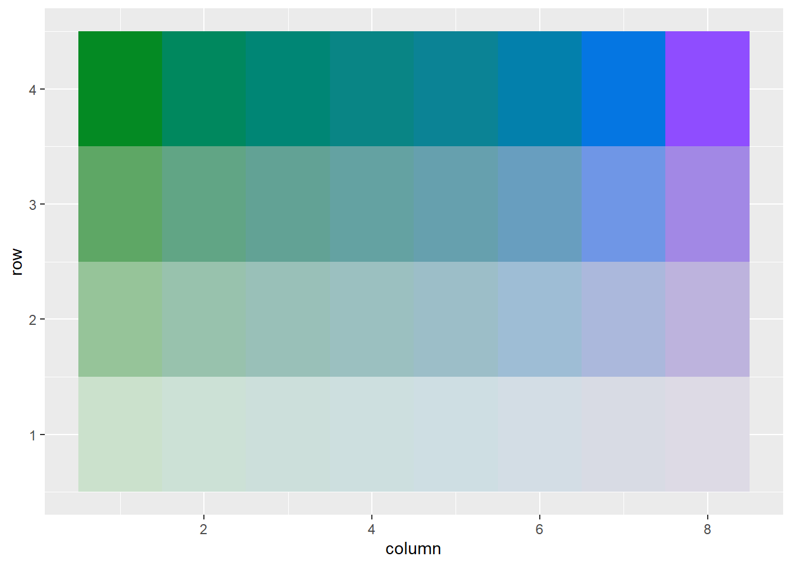
Plotting the data
Above, we were trying to plot the colors. Now, we want to assign those colors to data so we can plot the data with the appropriate color.
Single datapoint
The above is fine for looking at a color matrix, but in general, we’ll have a dataframe with a value for each dimension, and need to assign it a single color. Step one is figuring out how to do that assignment.
Can I take a ‘datapoint’ with arbitrary values on both axes and choose its color?
Can we do that for both color bins or continuous color?
We’ll need to relativise the data, since neither hue or fade are defined on the real line, but by their endpoints.
Let’s fake some data. Don’t use round numbers (e.g. 0, 100) to avoid making stupid mistakes relating to relativising the scale. We need to know the endpoints of the data to match the endpoints of the hue and fade, and then a datapoint somewhere in the middle to create.
# what is the range of the data?
# don't use round numbers (e.g. 0, 100)
max1 <- 750
min1 <- 150
max2 <- 67
min2 <- -55
# get color for a single value pair
val1 <- 455
val2 <- 8just use a simple linear transform to get position on the min-max axes. Could use logit or something for either, but keeping it simple. The value above the min divided by the range gives where the data point is on a 0-1 scale from min to max. In reality, we will have two vectors (well, cols in a dataframe), and this is actually easier to do in that case because we can just get the min and max directly.
valpos1 <- (val1-min1)/(max1-min1)
valpos2 <- (val2-min2)/(max2-min2)That’s easy to vectorize, which is basically how we’ll do it with a dataframe.
For now, can we just get individual colors to assign to a value pair?
Need to specify the min and max hue- these are the hue endpoints, not data endpoints.
minhue <- 130
maxhue <- 275find the hue value at the same relative position as the datapoint
matchH1 <- (maxhue-minhue)*valpos1 + minhueUsing the manual colors
singlehclmat1 <- cbind(50, max_chroma(h = matchH1, l = 50, floor = TRUE),
matchH1)
pgsingle1 <- polarLUV(singlehclmat1)
swatchplot(hex(pgsingle1))also need the other axis. That’s also just on 0-1 (well, 1-0, since it’s fade, not intensity) and so would be done the same way.
singlecol <- col2dmat(hex(pgsingle1), fadevals = (1-valpos2))
swatchplot(singlecol)It’s clear we can write all this as functions, and that we’ll need to. So…
Programatically finding colors
Earlier, we made col2dmat, which found colors and faded them. We want to do something similar here, but the goal isn’t quite the same- we don’t really care about the full matrix, but about a single point. We could modify col2dmat, but probably easier (and fewer horrible logicals) to just write purpose-built functions.
Need new functions to 1) find the hue, 2) adjust the fade
Find the hue
Takes either a number of bins or Inf for continuous.
huefinder <- function(hueval, minhue, maxhue, n = Inf, palname = NULL) {
# If continuous, use the value
# If binned, find the value of the bin the value is in
if (is.infinite(n)) {
matchH <- (maxhue-minhue)*hueval + minhue
} else if (!is.infinite(n)) {
nvec <- seq(from = 0, to = 1, length.out = n)
# The nvecs need to choose the COLOR, but the last one gets dropped in
# findInterval, so need an n+1
whichbin <- findInterval(hueval,
seq(from = 0, to = 1, length.out = n+1),
rightmost.closed = TRUE)
# Don't build if using named palette because won't have min and max
if (is.null(palname)) {
binhue <- nvec[whichbin]
matchH <- (maxhue-minhue)*binhue + minhue
}
}
if (is.null(palname)) {
h <- cbind(50, max_chroma(h = matchH, l = 50, floor = TRUE),
matchH)
h <- hex(polarLUV(h))
} else {
h <- sequential_hcl(n, palname)[whichbin]
}
return(h)
}Find the fade
This takes the just found hue as basehue, and fades it. Again, n specifies either a number of fade bins or if infinite it is continuous and so just fades by whatever the value is.
fadefinder <- function(fadeval, basehue, n = Inf) {
# If n is infinite, just use fadeval. Otherwise, bin, dropping the all-white level
if (is.infinite(n)) {
fadeval <- fadeval
} else {
# The +1 drops the white level
fadevec <- seq(from = 0, to = 1, length.out = n + 1)
# Rightmost closed fixes an issue right at 1
fadeval <- fadevec[findInterval(fadeval, fadevec, rightmost.closed = TRUE) + 1]
}
fadedcol <- lighten(basehue, amount = 1-fadeval) %>%
desaturate(amount = 1-fadeval)
}Hue and fade
This is meant to use in a mutate to take two columns of data and find the appropriate color. Should use … to pass, but whatever
colfinder <- function(hueval, fadeval, minhue, maxhue, nhue = Inf, nfade = Inf, palname = NULL) {
thishue <- huefinder(hueval, minhue, maxhue, nhue, palname)
thiscolor <- fadefinder(fadeval, thishue, nfade)
}Quick tests
funhue <- huefinder(valpos1, minhue = minhue, maxhue = maxhue)
funfaded <- fadefinder(valpos2, funhue)
swatchplot(funfaded)should be the same as
funboth <- colfinder(valpos1, valpos2, minhue, maxhue)
swatchplot(funboth)
Calculating for dataframes
Vectorizing the relativization calculations is straightforward.
vec1 <- c(150, 588, 750, 455, 234)
# get it for each value in vectorized way
(vec1 - min(vec1))/(max(vec1)-min(vec1))[1] 0.0000000 0.7300000 1.0000000 0.5083333 0.1400000Making a function to get the relative position. We can use this in the mutate once we move on to dataframes.
relpos <- function(vec) {
(vec - min(vec))/(max(vec)-min(vec))
}Now, let’s make a dataframe of fake data, with one column that should map to hue and the other mapping to fade. This just puts points all across the space of both variables so we can make sure everything is getting assigned correctly. Then, we’ll use the functions we just created to do a few different things:
- custom hue ramps and built-in palettes
- binned hue and fade
- continuous hue and binned fade
- both continuous
The ‘continuous’ examples using inbuilt palettes are only pseudo-continuous by using large numbers of bins because that’s easier for the moment given the way sequential_hcl() works. There’s probably a way around it, but for the moment I’ll ignore it.
colortibble <- tibble(rvec1 = runif(10000, min = -20, max = 50),
rvec2 = runif(10000, min = 53, max = 99)) %>%
mutate(rel1 = relpos(rvec1),
rel2 = relpos(rvec2)) %>%
mutate(colorval = colfinder(rel1, rel2, minhue, maxhue),
binval = colfinder(rel1, rel2, minhue, maxhue, nhue = 8, nfade = 4),
# need to bypass some args
binsun = colfinder(rel1, rel2, nhue = 8, nfade = 4, palname = 'ag_Sunset',
minhue = NULL, maxhue = NULL),
pseudoconsun = colfinder(rel1, rel2, nhue = 1000, nfade = 4, palname = 'ag_Sunset',
minhue = NULL, maxhue = NULL),
pseudoconsun2 = colfinder(rel1, rel2, nhue = 1000, nfade = Inf, palname = 'ag_Sunset',
minhue = NULL, maxhue = NULL))Continuous in both dimensions, using custom hue ramp
ggplot(colortibble, aes(x = rvec1, y = rvec2, color = colorval)) +
geom_point() +
scale_color_identity()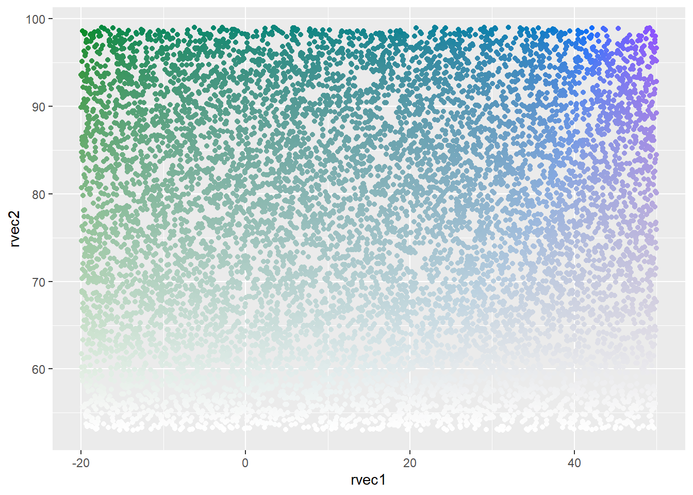
Binned both dims, custom ramp
ggplot(colortibble, aes(x = rvec1, y = rvec2, color = binval)) +
geom_point() +
scale_color_identity()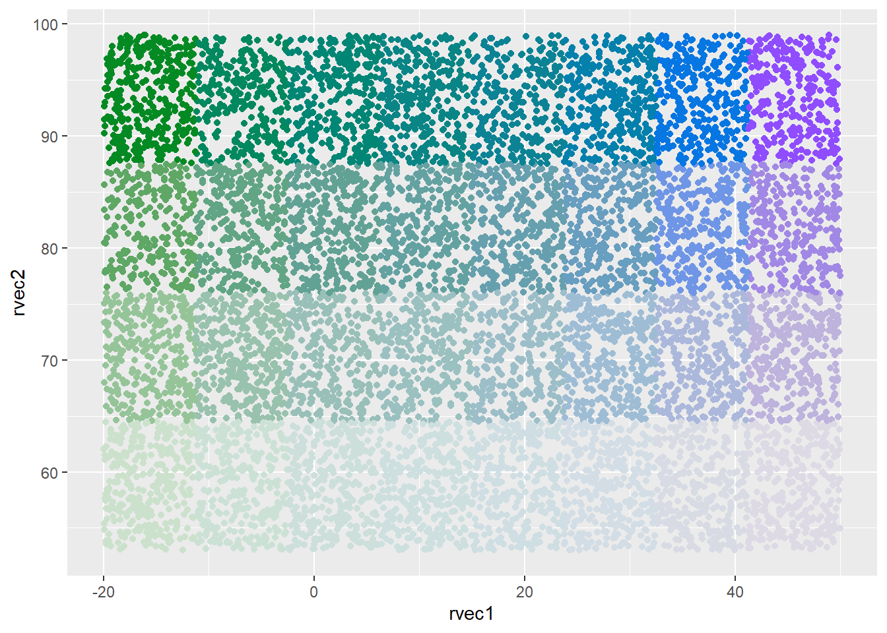
Inbuilt palette, binned both dims.
There is a spot in this ag_Sunset palette that matches the ggplot default grey background and so hard to see, but I’ll ignore that for the moment since it doesn’t affect the main thing we’re doing. THese aren’t production plots.
ggplot(colortibble, aes(x = rvec1, y = rvec2, color = binsun)) +
geom_point() +
scale_color_identity()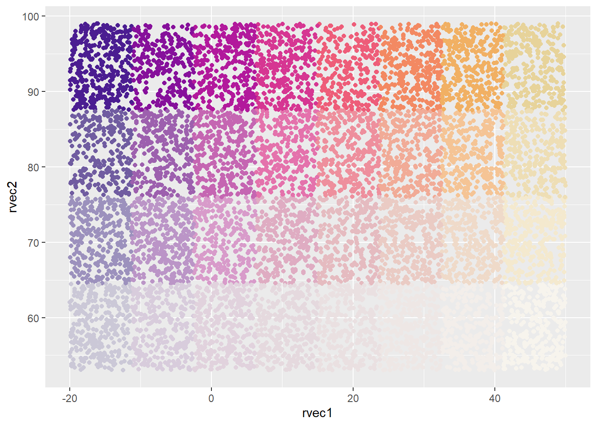
Pseudo-continuous, binned fades.
ggplot(colortibble, aes(x = rvec1, y = rvec2, color = pseudoconsun)) +
geom_point() +
scale_color_identity()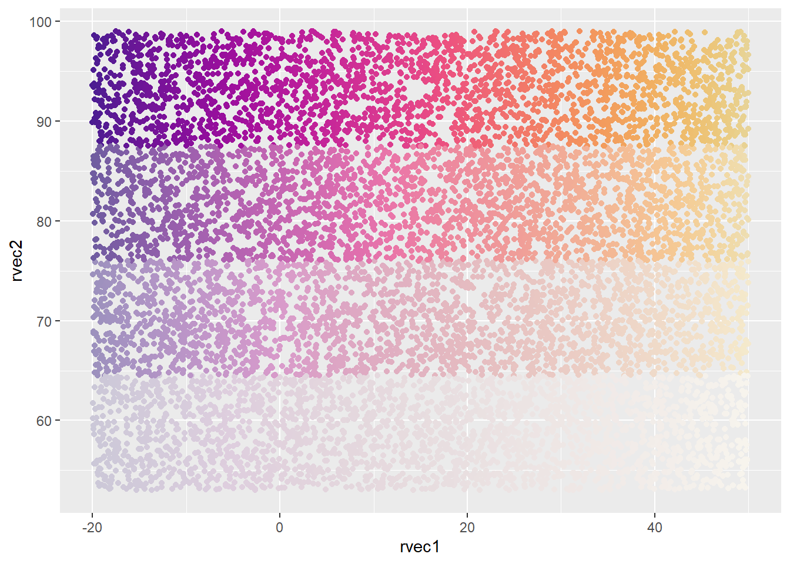
Pseudo-continuous both dimensions.
ggplot(colortibble, aes(x = rvec1, y = rvec2, color = pseudoconsun2)) +
geom_point() +
scale_color_identity()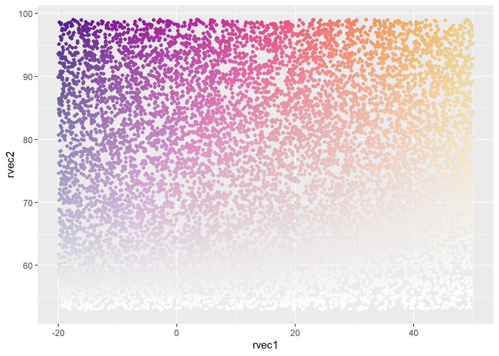
Plotting data
Now, let’s see how that might look for some real data. I’ll use some with point data (iris) and then move on to maps, since that’s originally what this was developed for. It should easily extend to anything we can aes() on, e.g. barplot fills, etc.
Scatterplot
To keep it simple, let’s use iris
It won’t span the full space because of the relationship, but that’s OK, I think. We did that above. Here’s iris- now let’s color this plot.
ggplot(iris, aes(x = Sepal.Length, y = Petal.Width)) + geom_point()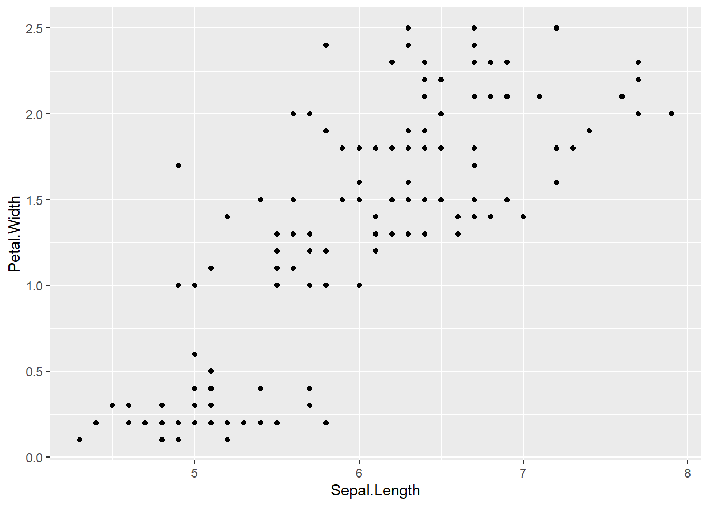
Fade defined by an axis
This is how we did it above when plotting the colors to make sure they were working.
Relativize the x and y to define colors.
coloriris <- iris %>%
mutate(rel1 = relpos(Sepal.Length),
rel2 = relpos(Petal.Width)) %>%
mutate(colorval = colfinder(rel1, rel2, minhue, maxhue),
binval = colfinder(rel1, rel2, minhue, maxhue, nhue = 8, nfade = 4),
# need to bypass some args
binsun = colfinder(rel1, rel2, nhue = 8, nfade = 4, palname = 'ag_Sunset',
minhue = NULL, maxhue = NULL),
pseudoconsun = colfinder(rel1, rel2, nhue = 1000, nfade = 4, palname = 'ag_Sunset',
minhue = NULL, maxhue = NULL),
pseudoconsun2 = colfinder(rel1, rel2, nhue = 1000, nfade = Inf, palname = 'ag_Sunset',
minhue = NULL, maxhue = NULL))Make some plots to see the colors and fades correspond to the axis values in binned and unbinned ways.
ggplot(coloriris, aes(x = Sepal.Length, y = Petal.Width, color = colorval)) +
geom_point() +
scale_color_identity()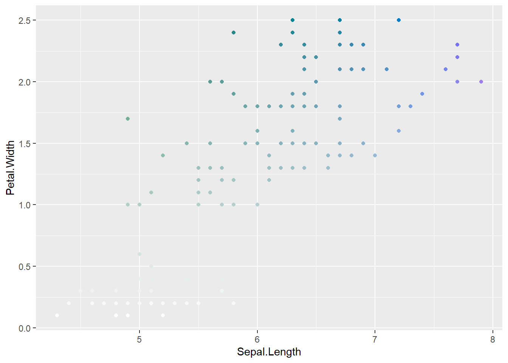
ggplot(coloriris, aes(x = Sepal.Length, y = Petal.Width, color = pseudoconsun2)) +
geom_point() +
scale_color_identity()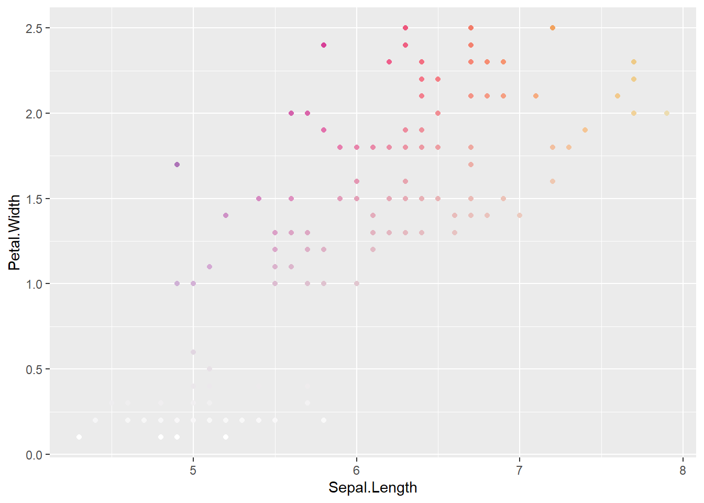
ggplot(coloriris, aes(x = Sepal.Length, y = Petal.Width, color = binsun)) +
geom_point() +
scale_color_identity()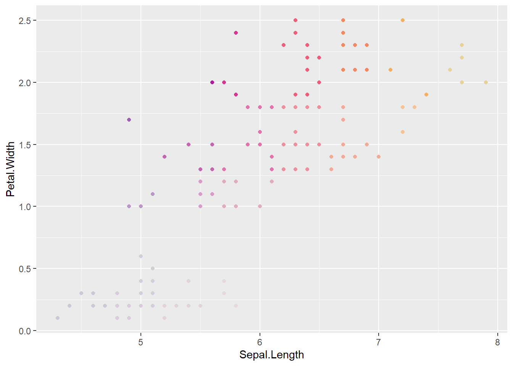
Fade as a new aesthetic
To actually match what I want to use this for, it’s more like we’d say versicolor is less certain. IE Species defines the fade. This is like fade is an aesthetic in ggplot, but we’re sort of manually doing it.
Let’s set hue by sepal length, and fade by species
uncertainVers <- iris %>%
mutate(rel1 = relpos(Sepal.Length),
faded = ifelse(Species == 'versicolor', 0.50, 1)) %>%
mutate(binhue = huefinder(rel1, n = 8, palname = 'ag_Sunset'),
conhue = huefinder(rel1, n = 1000, palname = 'ag_Sunset'),
binfade = fadefinder(faded, binhue),
confade = fadefinder(faded, conhue))Now, versicolor should be faded relative to the others
ggplot(uncertainVers, aes(x = Sepal.Length, y = Petal.Width, color = binfade)) +
geom_point() +
scale_color_identity()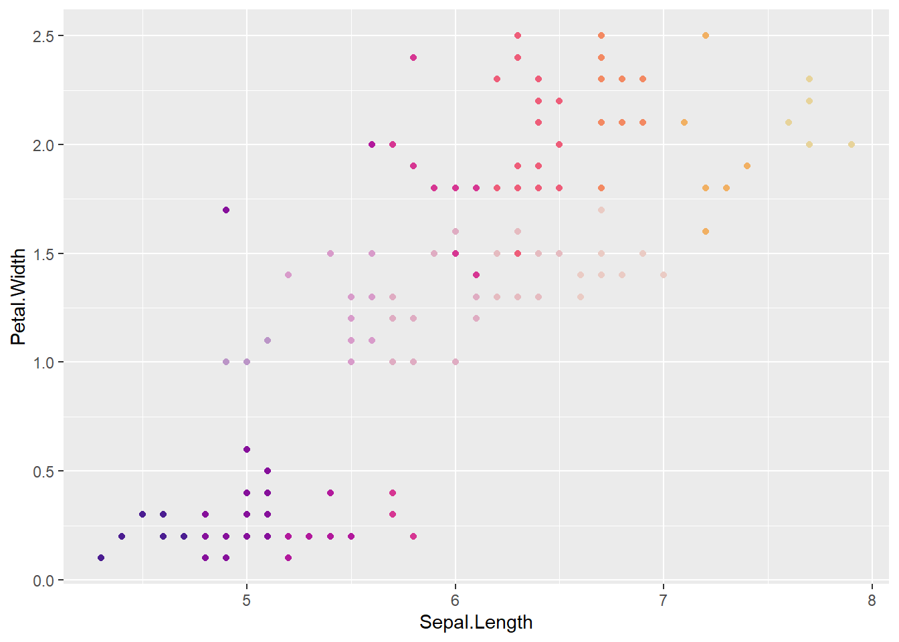
ggplot(uncertainVers, aes(x = Sepal.Length, y = Petal.Width, color = confade)) +
geom_point() +
scale_color_identity()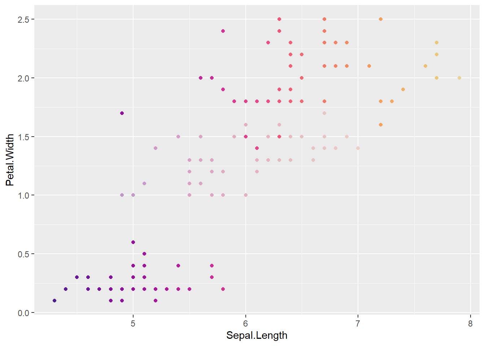
That seems to be working, both binned and continous on the hue scale.
Maps
What I really want this for is a map, with each polygon having a value of the variable of interest mapped to hue, and a ‘certainty’ determining the fade. Though that axis could really be any other value. Can I mock that up?
Read a map in of catchments in Australia.
allbasins <- read_sf(file.path('data', '42343_shp', 'rbasin_polygon.shp'))Ignoring fade for the minute, what should we color by? Probably should be random, really, for the demo.
Coloring by centroid will just put a cross-country fade on:
ggplot(allbasins, aes(fill = CENTROID_X)) + geom_sf() + scale_fill_continuous_sequential('ag_Sunset')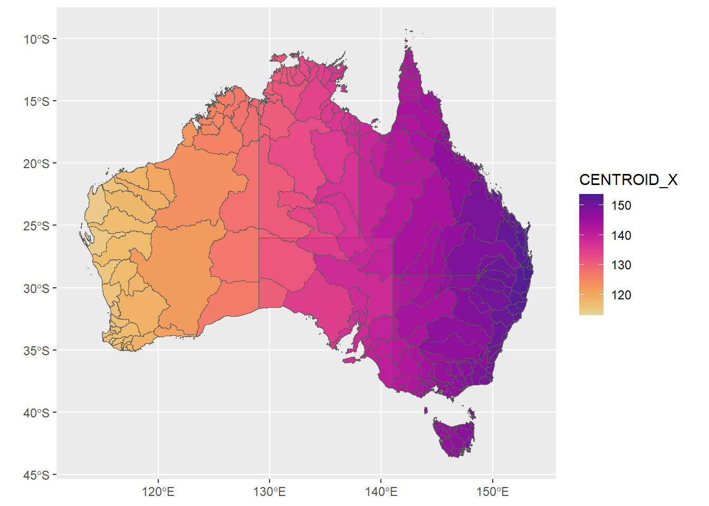
Let’s make a column representing the value we want to plot for each basin, just chosen at random
allbasins <- allbasins %>%
mutate(fakevals = runif(nrow(allbasins))) %>%
mutate(rel1 = relpos(fakevals)) %>%
mutate(binhue = huefinder(rel1, n = 8, palname = 'ag_Sunset'),
conhue = huefinder(rel1, n = 1000, palname = 'ag_Sunset'))I can use the values directly here with scale_fill_XX if I don’t care about fade
ggplot(allbasins, aes(fill = fakevals)) + geom_sf() + scale_fill_continuous_sequential('ag_Sunset')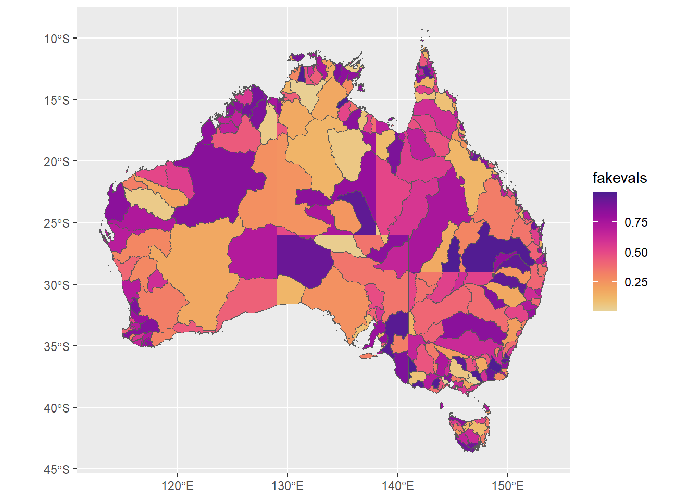
but the hues for the faded should match the set hues. Now, I need to use scale_fill_identity(). Works for binned and pseudo-continuous. I’ll save the binned to compare later with the faded version.
huesonly <- ggplot(allbasins, aes(fill = binhue)) +
geom_sf() +
scale_fill_identity()
huesonly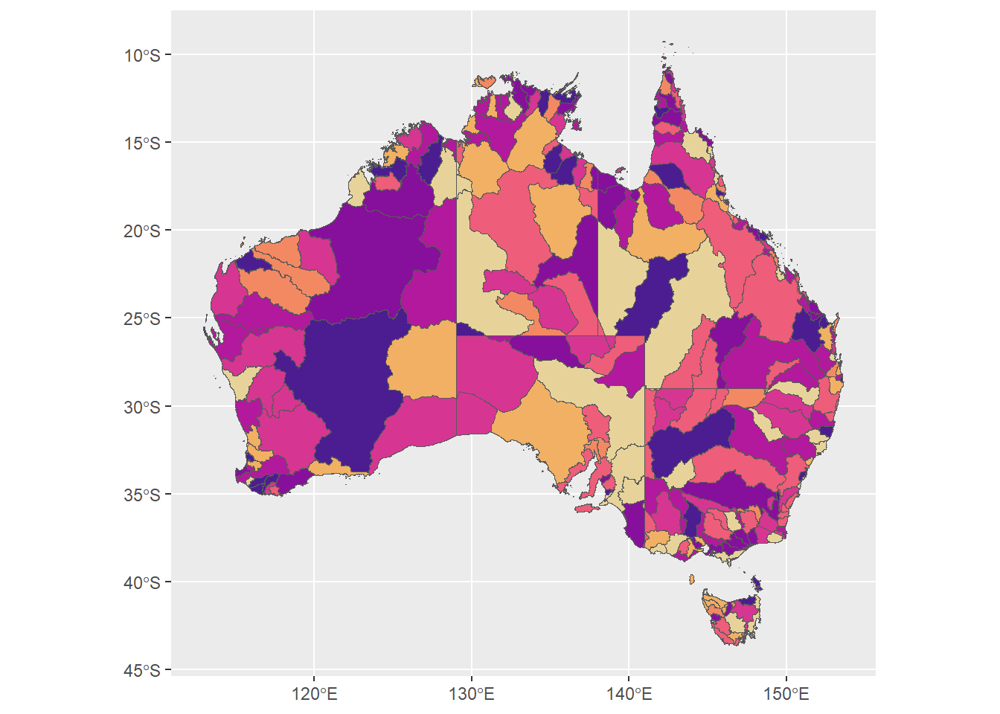
ggplot(allbasins, aes(fill = conhue)) +
geom_sf() +
scale_fill_identity()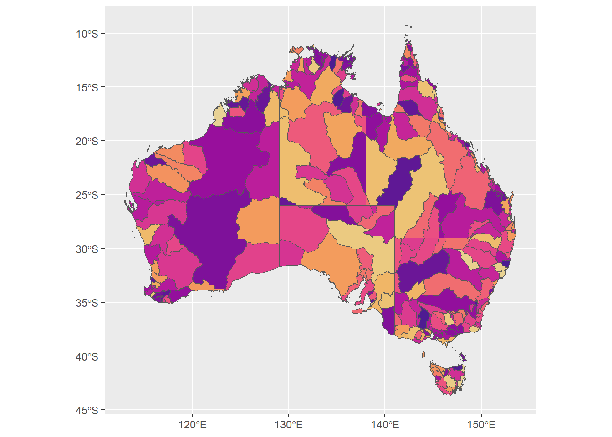
Now, fade some out (with relatively low probability)
allbasins <- allbasins %>%
mutate(faded = sample(x = c(1, 0.5),
size = nrow(allbasins),
replace = TRUE,
prob = c(0.8, 0.2))) %>%
mutate(binfade = fadefinder(faded, binhue),
confade = fadefinder(faded, conhue))Binned and continuous. Again, save the binned for comparison
huefade <- ggplot(allbasins, aes(fill = binfade)) +
geom_sf() +
scale_fill_identity()
huefade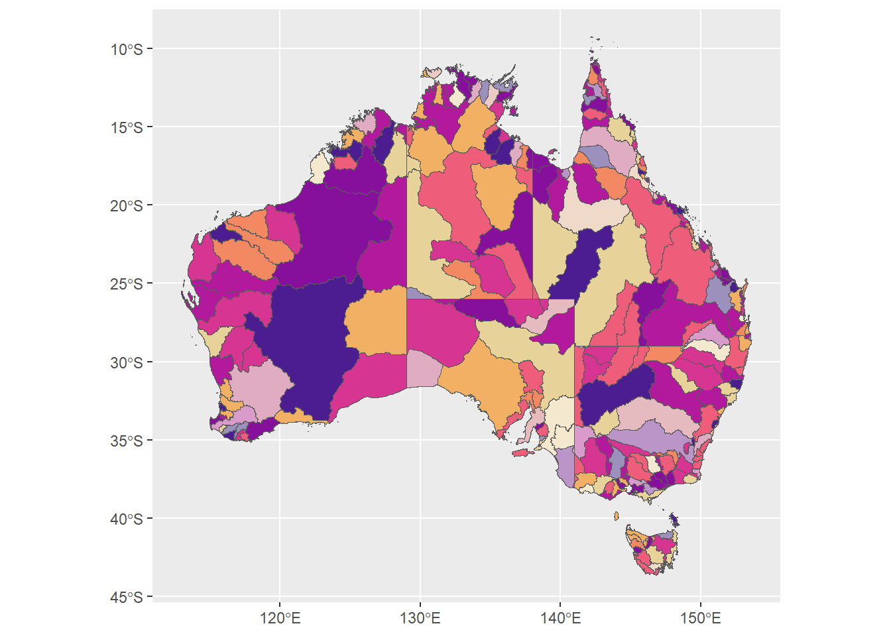
ggplot(allbasins, aes(fill = confade)) +
geom_sf() +
scale_fill_identity()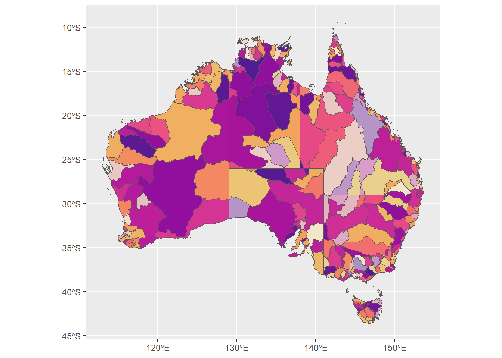
plot the raw and faded next to each other using patchwork. We can now see that some of the catchments are faded versions of the original hue.
huesonly + huefade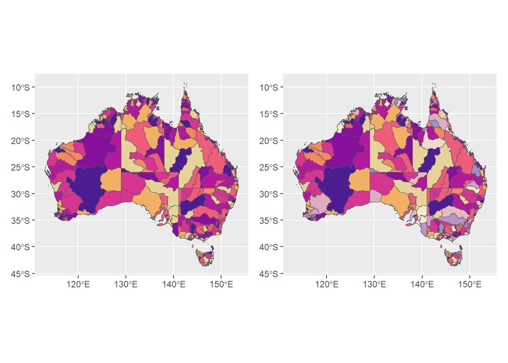
Legends
We need legends. Could be done by playing with the actual ggplot legend or making mini plot and gluing on.
Quick attempt at guide fails, because the colors are mixed up because of the RGB sorting.
ggplot(allbasins, aes(fill = binfade)) +
geom_sf() +
scale_fill_identity(guide = 'legend') +
guides(fill = guide_legend(ncol = 2))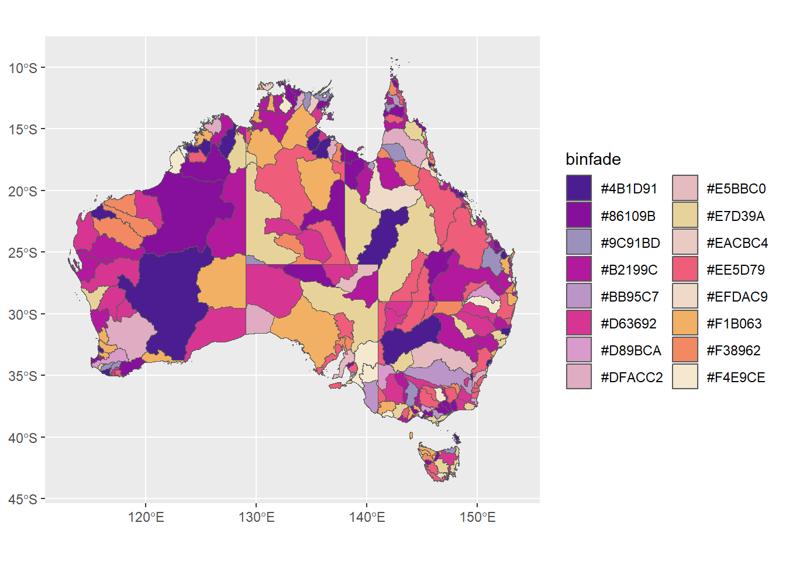
Can I change the order by basing it on the hues and then the fades? Does ‘breaks’ work? Yeah, sort of. And need to sort them in the right way.
ggplot(allbasins, aes(fill = binfade)) +
geom_sf() +
scale_fill_identity(guide = 'legend',
breaks = unique(allbasins$binhue))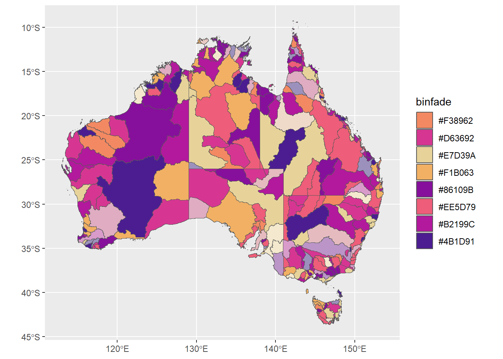
I think that will basically work, but I’ll need to edit a bit There’s probably a way to write the functions better to just do this all in the mutates, but for now, I can create a tibble of breaks and labels using summarise.
breaksnlabels <- allbasins %>%
st_drop_geometry() %>%
group_by(binhue) %>%
summarize(minbin = min(fakevals),
maxbin = max(fakevals),
fromto = paste0(as.character(round(minbin, 2)),
' to ',
as.character(round(maxbin, 2)))) %>%
ungroup() %>%
arrange(minbin)Works for the unfaded
ggplot(allbasins, aes(fill = binfade)) +
geom_sf() +
scale_fill_identity(guide = 'legend',
breaks = breaksnlabels$binhue,
labels = breaksnlabels$fromto)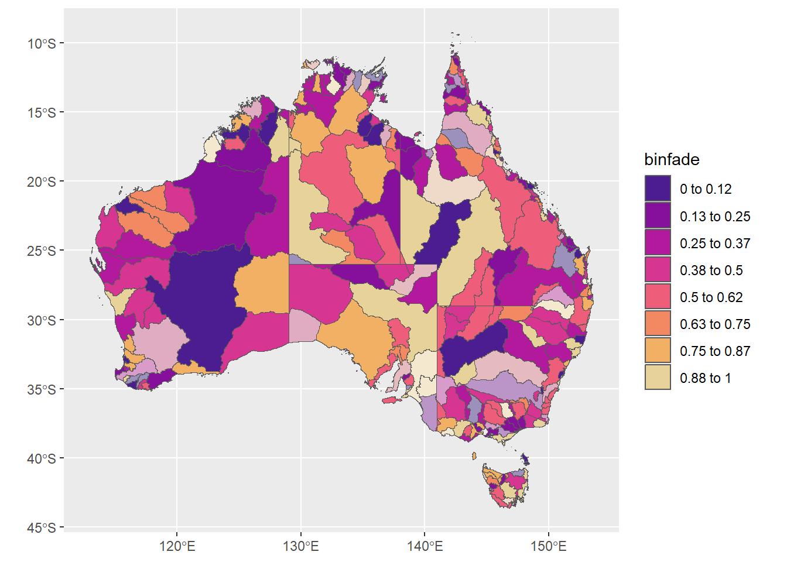
I could now ALSO fade those, but I might be able to do it as one summarise using the faded column
fadebreaks <- allbasins %>%
st_drop_geometry() %>%
# needs to capture the color boundaries, whether or not faded
group_by(binhue) %>%
mutate(minbin = min(fakevals),
maxbin = max(fakevals),
fromto = paste0(as.character(round(minbin, 2)),
' to ',
as.character(round(maxbin, 2)))) %>%
ungroup() %>%
group_by(binfade, faded) %>%
summarize(minbin = first(minbin),
maxbin = first(maxbin),
fromto = first(fromto)) %>%
ungroup() %>%
arrange(minbin, desc(faded))`summarise()` has grouped output by 'binfade'. You can override using the
`.groups` argument.ggplot(allbasins, aes(fill = binfade)) +
geom_sf() +
scale_fill_identity(guide = 'legend',
breaks = fadebreaks$binfade,
labels = fadebreaks$fromto) +
guides(fill = guide_legend(title = 'Value', title.position = 'top',
nrow = 2, label.position = 'top')) +
theme(legend.position = 'bottom')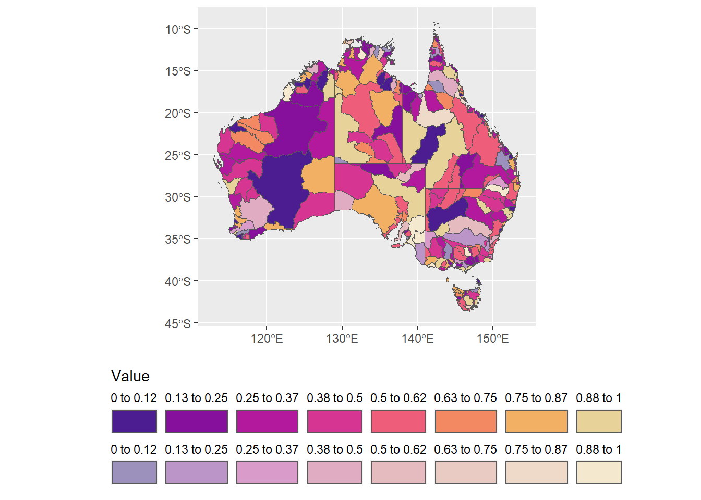
Plot tweaking
That’s close. Can I make the labels better? Ideally, drop from the faded, and make them at 45 or something. and fix up the size.
First, drop the labels on the faded, since they are the same as the base hue.
fb2 <- fadebreaks %>%
mutate(fromto = ifelse(faded == 0.5, '', fromto))ggplot(allbasins, aes(fill = binfade)) +
geom_sf() +
scale_fill_identity(guide = 'legend',
breaks = fb2$binfade,
labels = fb2$fromto) +
guides(fill = guide_legend(title = 'Value', title.position = 'top',
nrow = 2, label.position = 'top')) +
theme(legend.position = 'bottom')Fixing up the sizes and angles. The size doesn’t do what I want (square), because the text is too big.
ggplot(allbasins, aes(fill = binfade)) +
geom_sf() +
scale_fill_identity(guide = 'legend',
breaks = fb2$binfade,
labels = fb2$fromto) +
guides(fill = guide_legend(title = 'Value', title.position = 'top',
nrow = 2, label.position = 'top')) +
theme(legend.position = 'bottom',
legend.background = element_blank(),
legend.key.size = unit(0.3, 'cm'), # This should make them square, but isn't.
legend.text = element_text(angle = 45, vjust = 0.4))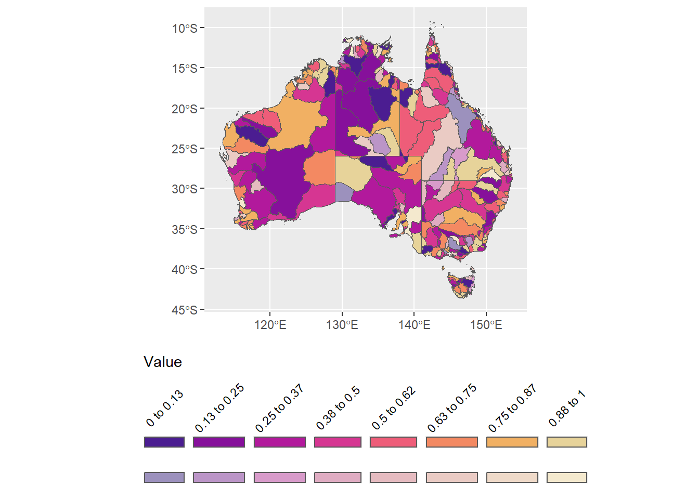
Can I fake it on the row labels by inserting line breaks? The number of lines is really unstable across device sizes or saving the figure, so the number of line breaks will have to be adjusted every time this gets saved etc. But it might kind of work.
ggplot(allbasins, aes(fill = binfade)) +
geom_sf() +
scale_fill_identity(guide = 'legend',
breaks = fb2$binfade,
labels = fb2$fromto) +
guides(fill = guide_legend(title = 'Value\n\n\n\nCertain\n\n\nUncertain', title.position = 'left',
nrow = 2, label.position = 'top')) +
theme(legend.position = 'bottom',
legend.background = element_blank(),
legend.key.size = unit(0.3, 'cm'), # This should make them square, but isn't.
legend.text = element_text(angle = 45, vjust = 0.4))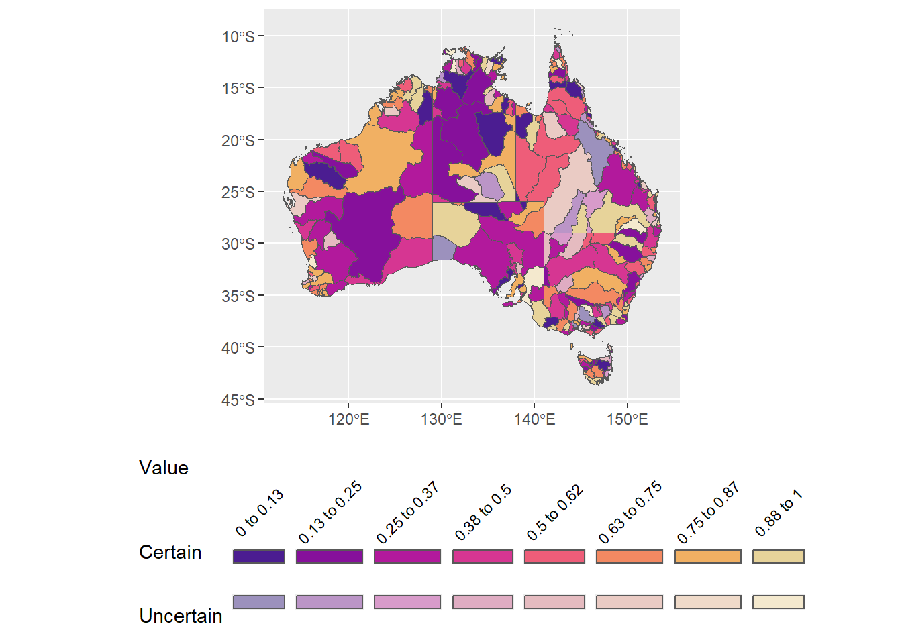
Can I bold that title?
ggplot(allbasins, aes(fill = binfade)) +
geom_sf() +
scale_fill_identity(guide = 'legend',
breaks = fb2$binfade,
labels = fb2$fromto) +
guides(fill = guide_legend(title = expression(atop(bold('Value'),atop('Certain','Uncertain'))),
title.position = 'left',
nrow = 2, label.position = 'top')) +
theme(legend.position = 'bottom',
legend.background = element_blank(),
legend.key.size = unit(0.3, 'cm'), # This should make them square, but isn't.
legend.text = element_text(angle = 45, vjust = 0.4))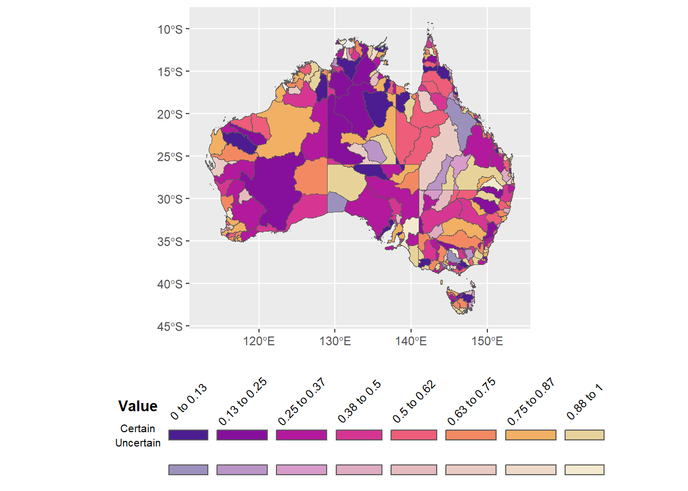
That doesn’t work very well. Does ggtext do it? Allows markdown syntax and HTML (hence the
instead of ). It works, but still, the number of breaks will depend on the size of the figure device or file
ggplot(allbasins, aes(fill = binfade)) +
geom_sf() +
scale_fill_identity(guide = 'legend',
breaks = fb2$binfade,
labels = fb2$fromto) +
guides(fill = guide_legend(title = '**Value**<br><br><br><br>Certain<br><br>Uncertain',
title.position = 'left',
nrow = 2, label.position = 'top')) +
theme(legend.title = ggtext::element_markdown(),
legend.position = 'bottom',
legend.background = element_blank(),
legend.key.size = unit(0.5, 'cm'), # This should make them square, but isn't because the angled value labels don't allow it.
legend.text = element_text(angle = 45, vjust = 0.4))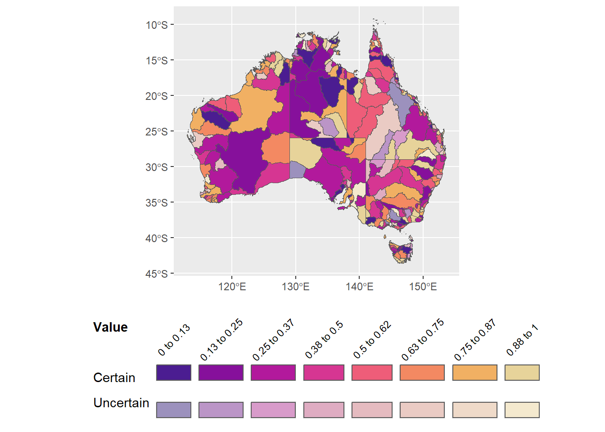
If we want square legend boxes and readable text for the value labels, might have to go vertical and that means re-doing the breaks and labels dataframe
fbv <- fadebreaks %>%
mutate(fromto = ifelse(faded == 1, '', fromto)) %>%
arrange(desc(faded), minbin)ggplot(allbasins, aes(fill = binfade)) +
geom_sf() +
scale_fill_identity(guide = 'legend',
breaks = fbv$binfade,
labels = fbv$fromto) +
guides(fill = guide_legend(title = '**Value**<br><br>Certain Uncertain',
title.position = 'top',
ncol = 2, label.position = 'right')) +
theme(legend.title = ggtext::element_markdown(),
legend.position = 'right',
legend.background = element_blank(),
legend.key.size = unit(0.5, 'cm'))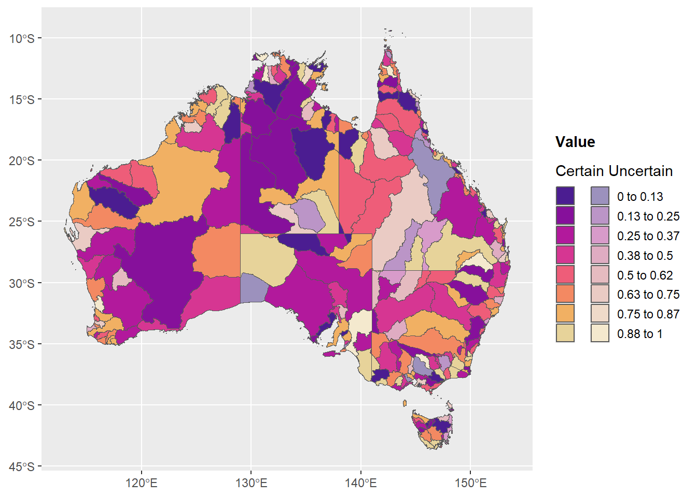
That works pretty well. If we wanted multiple levels of uncertainty (fades), a similar thing would work with just having more columns. That basically works. If I want to label the fades more robustly, I think I’ll likely need to resort to grobs, in which case I probably might as well do the figure as legend method.
Mini-figure legends
Sometimes we want to create a legend and then add it back into a figure (maybe if it’s shared, or we want a standard legend across a group of figures). Here, we might want to create a different legend for the certian and uncertain, glue them together, and then glue them back on the main figure.
to show how this might make sense, let’s make three plots- one with just the certain, one with uncertain, and one with no legend, and then glue together Making this as vertical, but easy enough to swap
Make the map alone
justmap <- ggplot(allbasins, aes(fill = binfade)) +
geom_sf() +
scale_fill_identity(guide = 'legend',
breaks = fbv$binfade,
labels = fbv$fromto) +
theme(legend.position = 'none')
# used later- continuous specification of color and fade
justmapcon <- ggplot(allbasins, aes(fill = confade)) +
geom_sf() +
scale_fill_identity(guide = 'legend',
breaks = fbv$binfade,
labels = fbv$fromto) +
theme(legend.position = 'none')Get the indices for the two fades
certs <- which(fbv$faded == 1)
uncerts <- which(fbv$faded == 0.5)Make the legend for the unfaded
certleg <- ggplot(allbasins, aes(fill = binfade)) +
geom_sf() +
scale_fill_identity(guide = 'legend',
breaks = fbv$binfade[certs],
labels = fbv$fromto[certs]) +
guides(fill = guide_legend(title = 'Certain',
title.position = 'top',
ncol = 1, label.position = 'right')) +
theme(legend.title = ggtext::element_markdown(),
legend.position = 'right',
legend.background = element_blank(),
legend.key.size = unit(0.5, 'cm'))
# I don't actually want the plot, just the legend, so
certleg <- ggpubr::get_legend(certleg)And the faded
uncertleg <- ggplot(allbasins, aes(fill = binfade)) +
geom_sf() +
scale_fill_identity(guide = 'legend',
breaks = fbv$binfade[uncerts],
labels = fbv$fromto[uncerts]) +
guides(fill = guide_legend(title = 'Uncertain',
title.position = 'top',
ncol = 1, label.position = 'right')) +
theme(legend.title = ggtext::element_markdown(),
legend.position = 'right',
legend.background = element_blank(),
legend.key.size = unit(0.5, 'cm'))
# I don't actually want the plot, just the legend, so
uncertleg <- ggpubr::get_legend(uncertleg)Glue those legends
bothleg <- ggpubr::ggarrange(certleg, uncertleg)and glue on the plot
plotpluslegs <- ggpubr::ggarrange(justmap, bothleg, widths = c(8,2))
plotpluslegs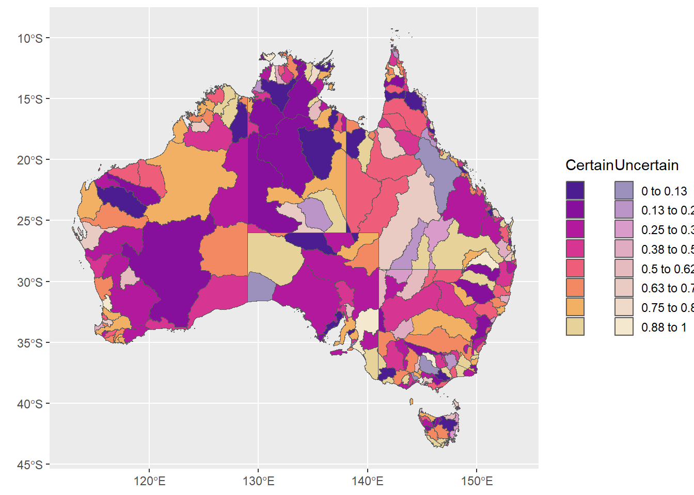
That’s not really any better than what I had before. It is useful to have this level of control sometimes though. In particular, we might want to use a PLOT as a legend, either binned or not.
To use a plot as a legend
Here, binned is obviously the way to go, especially for the two fade levels, but let’s demo both.
above, we defined a function col2dmat that makes a plot of the color matrix. Let’s use that to demo a few options. First create the figures that will be the legends.
Binned both dims, two fades, but just low-high labels
binnedplotmat <- col2dmat('ag_Sunset', n1 = 8, fadevals = c(0, 0.5))
bin2legqual <- plot2dcols(binnedplotmat) +
# Breaks aren't centered on the values for this geom, so instead of 0.5 and 1, need to shift
theme_void() +
scale_y_continuous(breaks = c(1, 2), labels = c('Uncertain', 'Certain')) +
# Vague levels
scale_x_continuous(breaks = c(1, 8), labels = c('Low', 'High')) +
theme(axis.text = element_text())
bin2legqual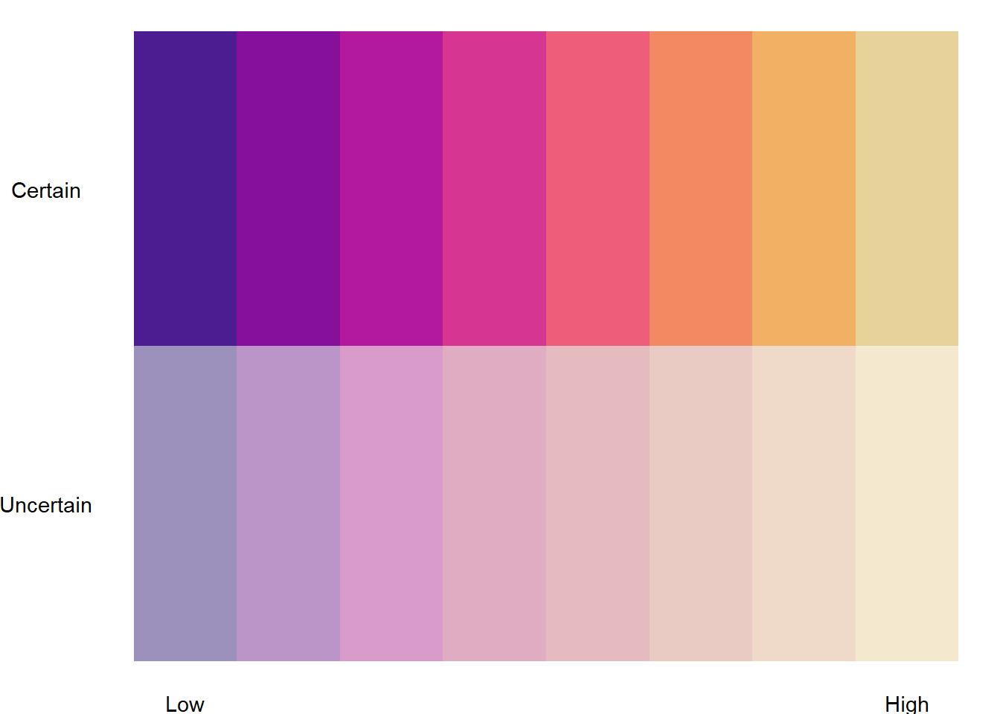
Binned both dims, but now the hue values are quantitatively labeled
namedlabs <- filter(fb2, fromto != '') %>% select(fromto) %>% pull()
bin2legquant <- plot2dcols(binnedplotmat) +
# Breaks aren't centered on the values for this geom, so instead of 0.5 and 1, need to shift
theme_void() +
scale_y_continuous(breaks = c(1, 2), labels = c('Uncertain', 'Certain')) +
# Vague levels
scale_x_continuous(breaks = 1:8, labels = namedlabs) +
theme(axis.text.y = element_text(),
axis.text.x = element_text(angle = 45, vjust = 1, hjust = 1)) +
ggtitle('Value')
bin2legquant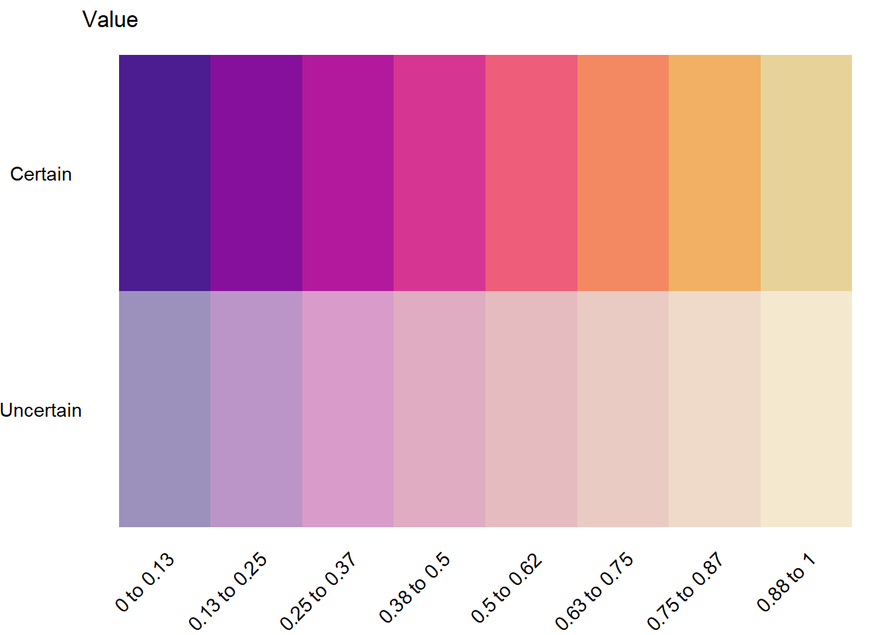
A few levels of fade. Very similar to above
mat4fade <- col2dmat('ag_Sunset', n1 = 8, n2 = 4)
fadevals <- rev(seq(0,1, length.out = 4+1))[1:4]
bin4leg <- plot2dcols(mat4fade) +
# Breaks aren't centered on the values for this geom, so instead of 0.5 and 1, need to shift
theme_void() +
scale_y_continuous(breaks = 1:4, labels = rev(fadevals), name = 'Certainty') +
scale_x_continuous(breaks = 1:8, labels = namedlabs, name = 'Value') +
theme(axis.text.y = element_text(),
axis.title.y = element_text(angle = 90),
axis.text.x = element_text(angle = 45, vjust = 1, hjust = 1),
axis.title.x = element_text())
bin4leg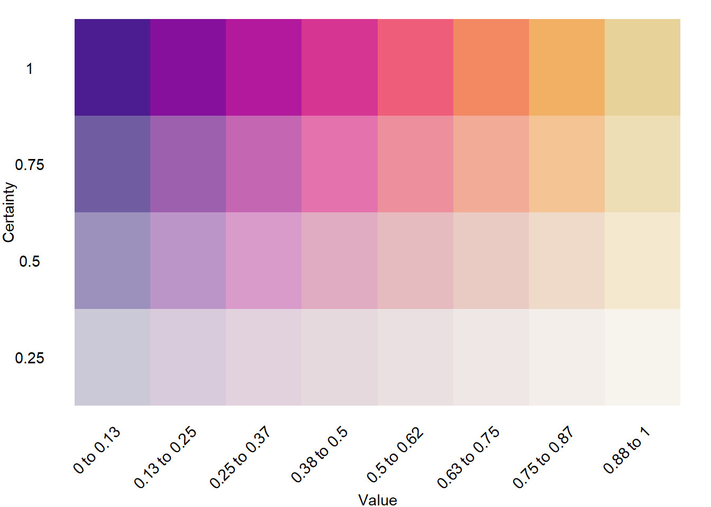
pseudo-continuous. put the x-axis on top, because that’s what we’d expect for a legend, really. Labels can take a lambda function of the breaks, allowing us to use auto-chosen breaks. But probably better to reference the values they correspond to. It’s just that for this silly demo they are 0-1. Let’s pretend for the minute that they’re logged just for fun and to demo how to do it.
matcfade <- col2dmat('ag_Sunset', n1 = 100, n2 = 100)
conleg <- plot2dcols(matcfade) +
theme_void() +
scale_y_continuous(name = 'Certainty %') +
#
scale_x_continuous(labels = ~round(log(.), 2), name = 'Value', position = 'top') +
theme(axis.text.y = element_text(),
axis.title.y = element_text(angle = 90),
axis.text.x = element_text(angle = 45, vjust = 1, hjust = 1),
axis.title.x = element_text())
conleg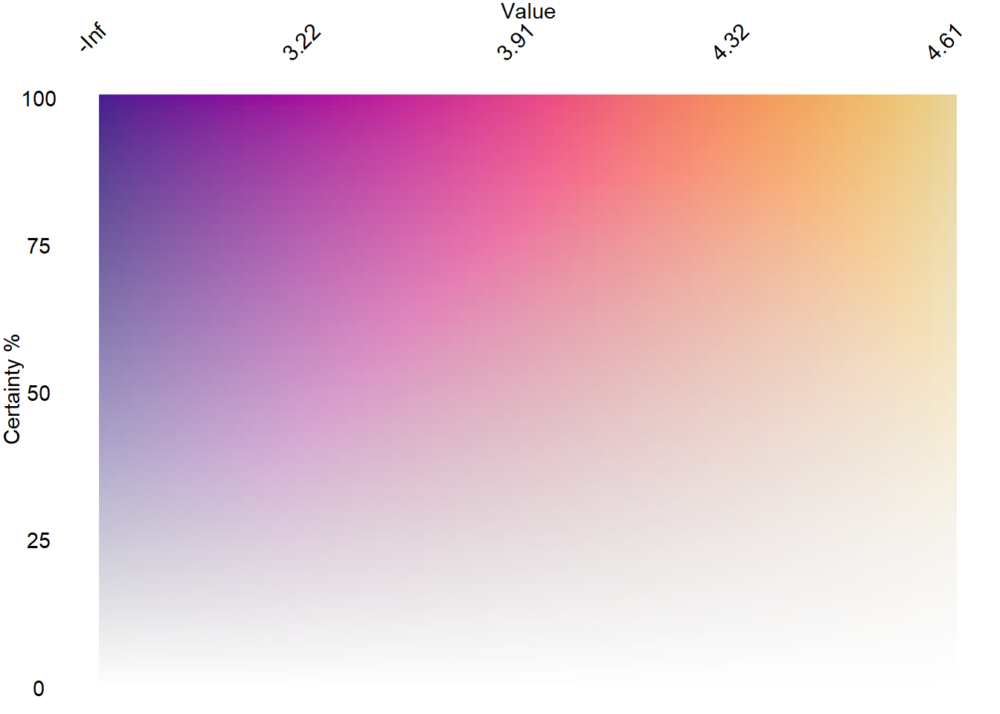
Now, attach those to the map as legends.
I’ll use patchwork for most of them, but ggpubr::ggarrange would work too, just with different tweaking. The way patchwork does insets and sizes is working better for me right now, so that’s what I’ll use.
Taking the grey background off because it’s distracting with inset legends.
Two-level binned legend with high-low
(justmap + theme_bw() + theme(legend.position = 'none')) +
inset_element(bin2legqual, left = 0.1, bottom = 0.1, right = 0.5, top = 0.2)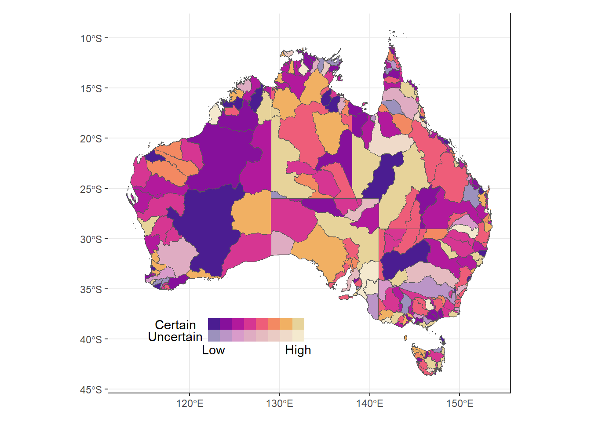
Same, but quantitative legend labels. Text is a bit absurd.
(justmap + theme_bw() + theme(legend.position = 'none')) +
inset_element((bin2legquant + theme(axis.text = element_text(size = 8),
title = element_text(size = 8))),
left = 0.1, bottom = 0, right = 0.5, top = 0.25)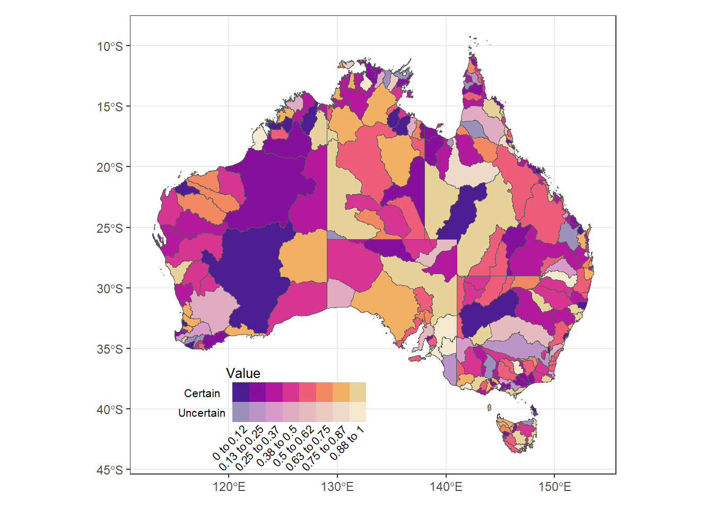
A 4-fade example with quantitative fades as well. That’s not our immediate need, but good to be able to do. maybe fade according to standard error or something.
(justmap + theme_bw() + theme(legend.position = 'none')) +
inset_element((bin4leg + theme(axis.text = element_text(size = 8),
title = element_text(size = 8))),
left = 0.1, bottom = 0, right = 0.5, top = 0.25)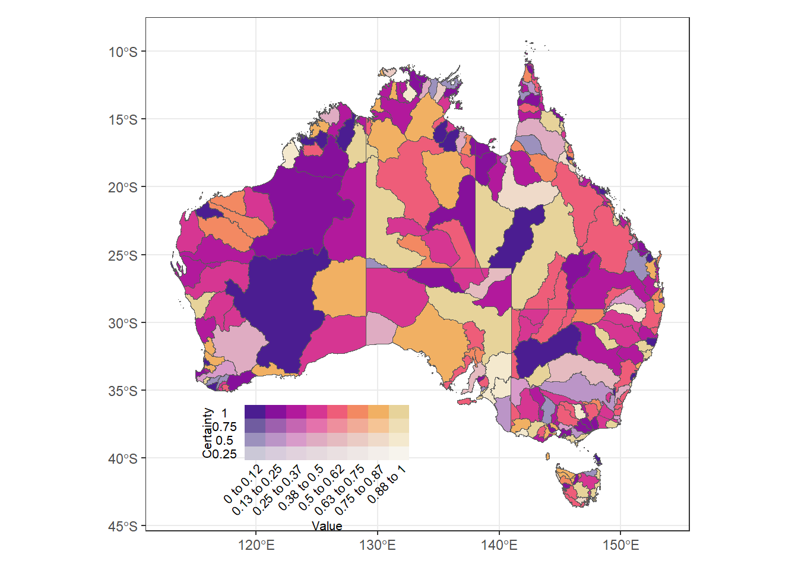
Continuous values in both dimensions. Here, we use a map where colors and fades are both defined continuously.
(justmapcon + theme_bw() + theme(legend.position = 'none')) +
inset_element((conleg + coord_fixed() +
theme(axis.text = element_text(size = 8),
title = element_text(size = 8))),
left = 0.1, bottom = 0.05, right = 0.5, top = 0.25)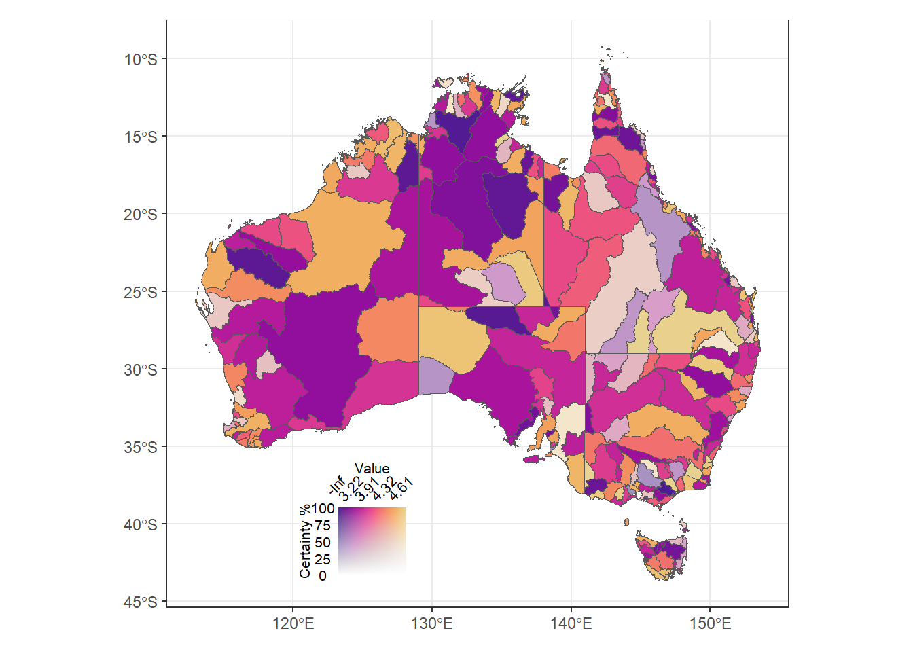
Can I put the legend off to the side just by specifying bigger coords? sort of- it goes but gets lost
(justmap + theme_bw() + theme(legend.position = 'none')) +
inset_element((conleg + coord_fixed() +
theme(axis.text = element_text(size = 8),
title = element_text(size = 8))),
left = 1, bottom = 0.4, right = 1.5, top = 0.75)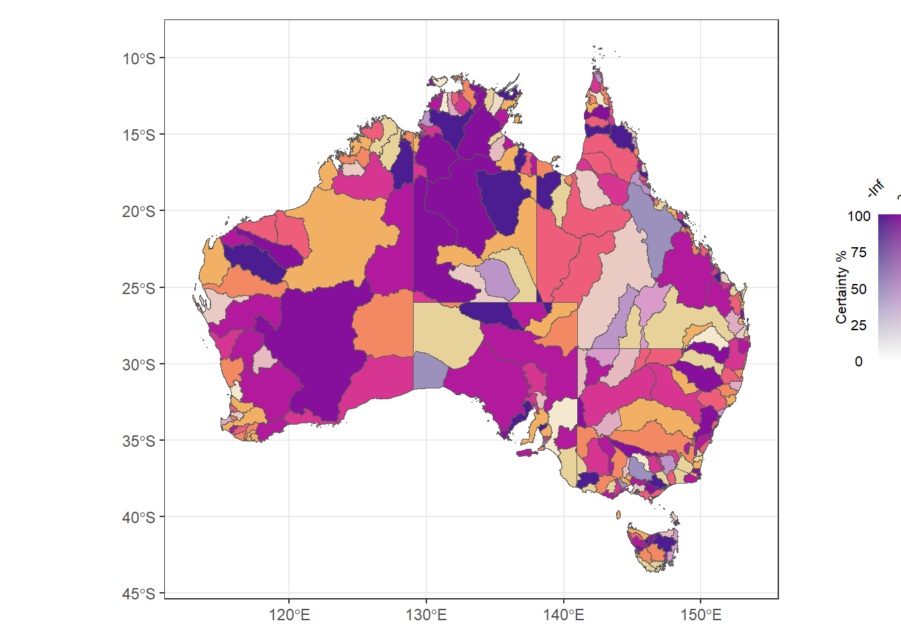
Works with making a small plot with spacers and then glueing that onto the big plot
guidespot <- plot_spacer() /
(conleg + coord_fixed() +
theme(axis.text = element_text(size = 8),
title = element_text(size = 8))) /
plot_spacer()
(justmap + theme_bw() + theme(legend.position = 'none')) +
guidespot +
plot_layout(widths = c(9, 1))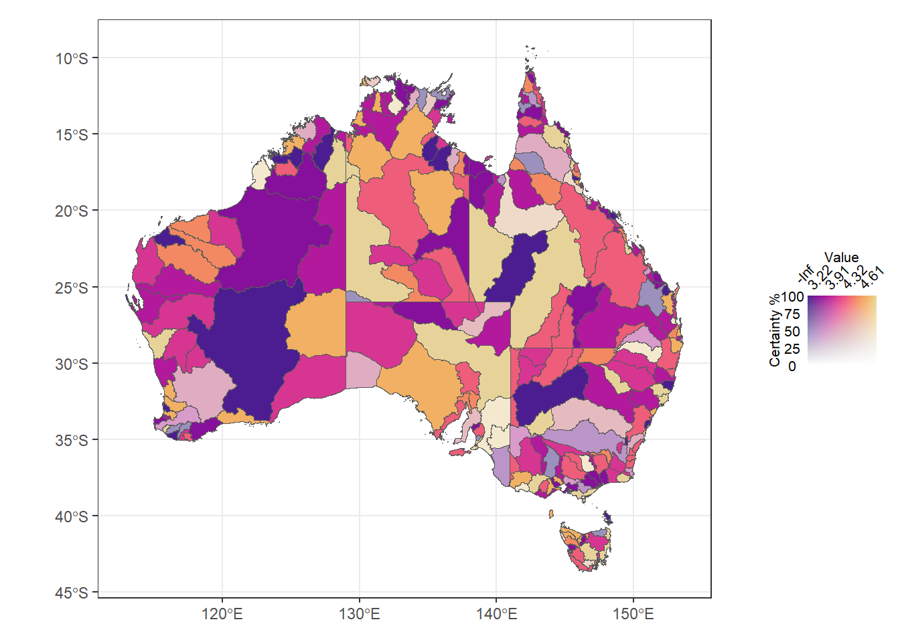
Does that work with the simpler ones? Yeah, although the 2-fades makes more sense horizontal, so do that
# I can't fiugre out why this creates a dataframe. results = 'hide' doesn't hide it, wrapping with invisible(), etc. I give up. Giving it its own code block
guidespot2 <- plot_spacer() |
(bin2legquant + theme(axis.text = element_text(size = 8),
title = element_text(size = 8))) |
plot_spacer() (justmap + theme_bw() + theme(legend.position = 'none')) /
guidespot2 +
plot_layout(heights = c(9, 1))
A very similar approach would work for ggpubr::ggarrange
There’s quite a lot more that could be done here, but this gets me what I need for now.
Notes
if this were truly bivariate (ie two variables of interest), could rotate 45 degrees to equally weight (and likely use different color ramps). But it’s not- it’s certainty along one axis, so leaving horiz and having a lightness axis fits what we’re doing here better.